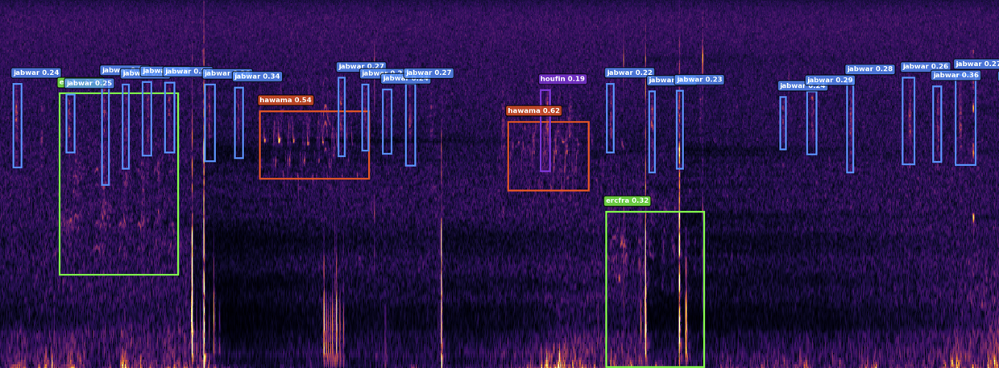

BirdBox
Deep Learning Bird Call Detection & Evaluation System
BirdBox is a comprehensive system for detecting and evaluating bird calls in audio recordings using deep learning. It leverages YOLO (You Only Look Once) object detection on spectrogram images to identify and localize bird vocalizations in time and frequency.
⚠️ Note: This project is still under active development. Performance may vary.
Scope¶
This code repository focuses on model inference and post-processing for bioacoustic event detection. Additionally, one can evaluate the performance of the model inference with ground truth annotations. Metrics like precision, recall, F\(\beta\) and confusion matrices are already implemented and ready to go.
What's not covered here is the model training. For this see BirdBox-Train (currently only available from within the BirdNET-Team).
Example Detection¶
The following image shows a visualization of a detection in an audio file. The generated PCEN spectrogram reaches from 50 to 15,000 Hertz across a span of roughly 15 seconds. The inference software found 4 different species vocalizations and was able to localize them in time and frequency.

Spectrogram Not Stored
The inference software takes in audio files and outputs detections in various formats. The spectrogram is computed internally but never written to disk unless explicitly visualized.
Key Features¶
- Interactive Demo - Streamlit frontend for quick tests
- Multiple Audio Formats - Supports WAV, FLAC, OGG, MP3 (WAV/FLAC recommended for best results)
- Arbitrary-Length Audio Processing - Handle audio from seconds to hours
- Song Reconstruction - Automatically merge temporally adjacent detections into continuous bird songs
- Batch Processing - Process entire directories of audio files PCEN Normalization - Per-Channel Energy Normalization for robust spectral features
- Comprehensive Evaluation - F-beta analysis, confusion matrices, optimal threshold finding
- Multiple Output Formats - JSON with algorithm metadata, simplified CSV, Xeno-Canto Annota-JSON and Raven Selection Table
- Multiple Model Formats - Works with
.pt,.onnx,.tfliteand.enginemodel formats
Quick Links¶
- Installation - set up the environment
- Interactive Demo - streamlit WebApp
- How it works - pipeline description
- Data In/Out - datasets and output-format descriptions
- Models and Metrics - list of models with corresponding metrics
- CLI Reference - command line interface
- API Reference - application programming interface
- GitHub Repository
License¶
The source code is licensed under the MIT License